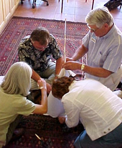
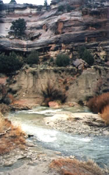

Comments by Participants
(listed by course)
The Collaborative Leader
Bill and Penny have created a retreat center that offers an incredibly hospitable ambiance, and breathtaking view of the canyon in this oasis in the Southwest corner of Colorado... This was the most worthwhile leadership workshop I have attended. Somehow the group dynamics called forth our best selves. I will encourage others to attend this outstanding leadership format.
- Chaplain and hospital administrator
This was a great course, covered a lot of material in a short amount of time!
- Division Engineer, state agency
I have been inspired to learn, read, practice, do more in terms of leadership... I [now] feel self-confident to develop my own vision and work to achieve success.
- Interpretive Specialist, national agency
Excellent, course was outstanding!
- Historian, national agency
I’m getting better results by being more conscious of the importance of preparing physically and mentally and setting the right tone for working with others.
- Department manager, utility service company
The Art of Facilitation - Level I
A real chance to grow. One of top few (very few) courses in 27.5 years of taking government - sponsored courses.
- Government official
This was a great training. Certainly one of the best I’ve ever seen. . . the location is amazing and very conducive to this type of training.
- Program Director
Bill was outstanding. Humor, pace and knowledge were all appropriate and fantastic.
- High tech company employee
I've been through many trainings in facilitation, leadership, and team building…your approach, obviously founded upon KISS, is by far the most realistic and applicable I've ever seen.
- Planner
Stunning. More than one person told me, “By a solid increment, it was the best training I’ve ever taken on any subject anywhere. ”
- Senior federal agency official
The Art of Facilitation - Level II
Bill Southworth, Penny Welch, and their team of healing leaders offer the greatest insights, most valuable learnings, and purest fun of any group facilitation course I’ve ever experienced.
- Planner and Facilitator
Fantastic! Stimulating, deeply satisfying and moving. A way to deepen oneself in order to better serve others.
- Landscape Architect and Facilitator
The experience was wildly wonderful and better than anything I could have expected.
- Landscape Architect and Facilitator
Bill’s contributions include just about everything he did: from creating and holding the space, to content and agenda preparation, to openness which allowed tears to flow into a safe space from the opening moments of the week, to profound listening, to letting us into his thinking along the way, and even posture. My emotions were swirling that week because I was so energized to see (in Bill) a few traits I have worked to cultivate and so many others that I strive for.
- Facilitator and Program Director
Facilitation is not about tools, mechanical orchestration, or (shudder) controlling people and meetings; it is about intention, intuition, heart- and mind-set.
- Facilitator and Program Director
Powerful and very moving are two overworked adjectives. But that's exactly what it was for me.
- Program Director and Facilitator
It sounds too strong to say that our week changed my life, but it’s close. I probably don’t look different to others, but inside my balance has shifted.
- Program Director and Facilitator
This week was the first time in my life that my different worlds were able to connect and weave together. Thank you.
- Program Director and Facilitator
The Wisdom of Conflict
“Without this program and the coaching we received from Bill Southworth, I don’t think that my business partner, who is also my spouse, would have ever listened to me.”
- Family Business Partner
“An elegantly executed workshop grounded in good theory with practical day-to-day applications. I’d recommend this unconditionally. The setting is beautiful. I came away transformed . . . Thanks so much again for a wonderful experience.”
- Planning consultant
“This program is a must for anyone who wants to learn to communicate appropriately and effectively.”
- Family Business Partner
“As a Gestalt therapist I give Bill and Penny’s Wisdom of Conflict retreat a ten. I walked away with practical tools, a conceptual framework, and the spiritual underpinnings for working with conflict. The “hot button” work at the heart of the retreat has been designed to maximize the learning that is essential to becoming a ‘peacemaker.’ The beauty of the setting, the intimacy of the group, the skillful leadership, and the general good humor made for a great three-day retreat.”
- Gestalt Therapist
“For the first time in over 11 years of knowing each other, my partner and I could really communicate effectively.”
- Business partner
“We have sought the help of others in the past (counselors, psychologists) who have tried to help us with our problems. Bill and Penny . . . helped us with our problems by offering another path to solution. This path is one of better communication to help prevent or deal with the issue in the first place.”
- Business partner
“If you’ve ever had disagreements you couldn’t seem to resolve and it’s affecting your business and/or personal life, you can’t afford to miss this program.”
- Entrepreneur
|